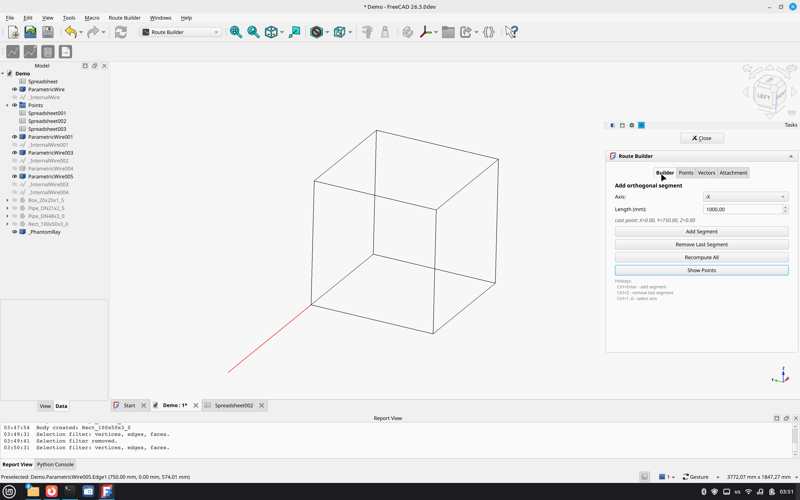
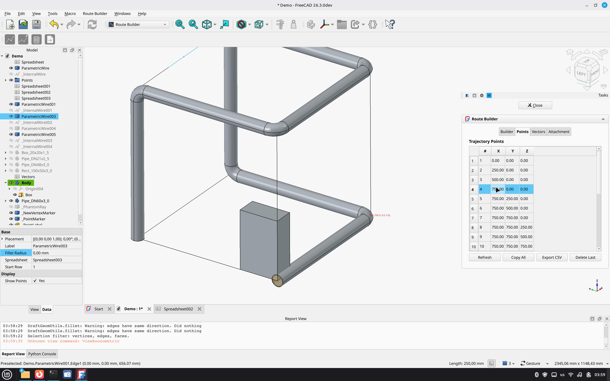
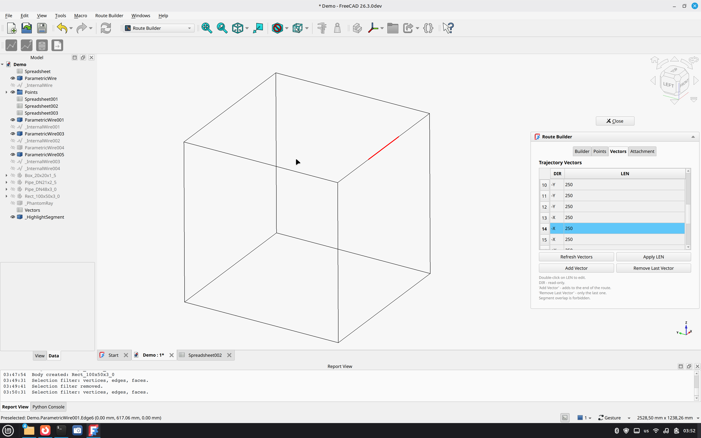
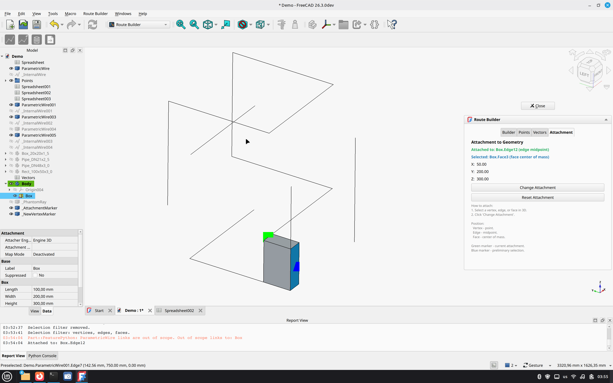
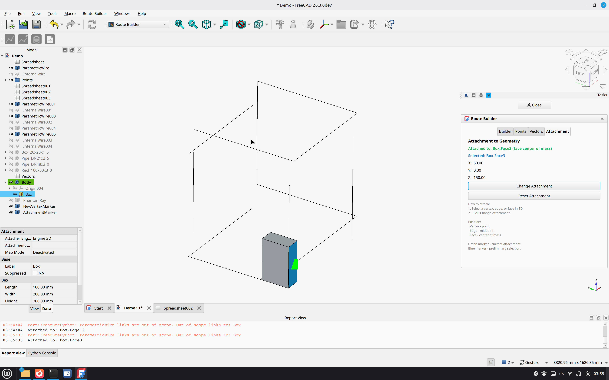
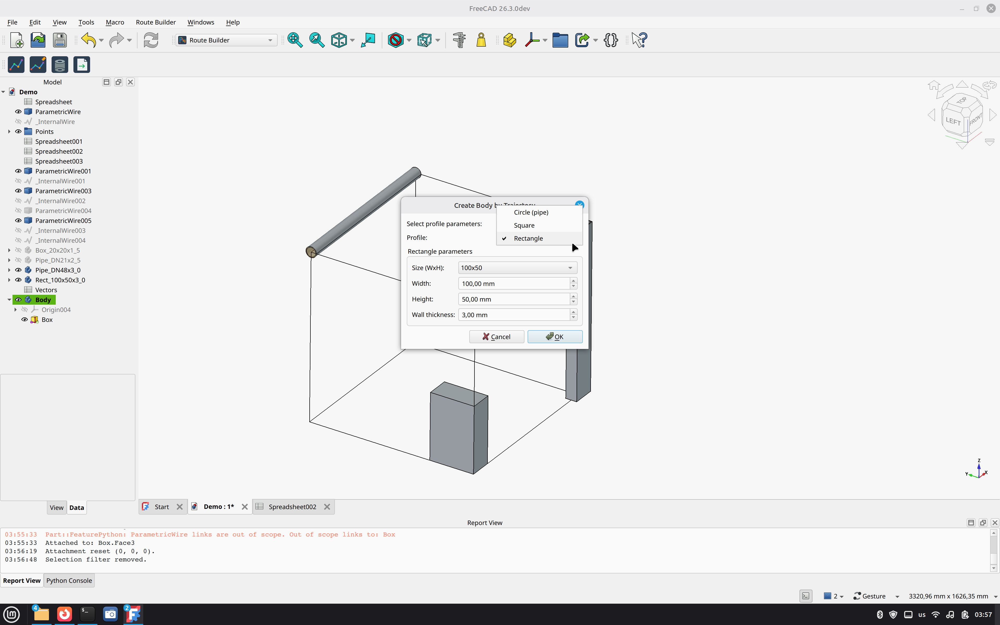
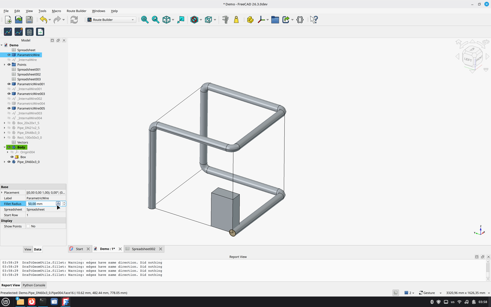
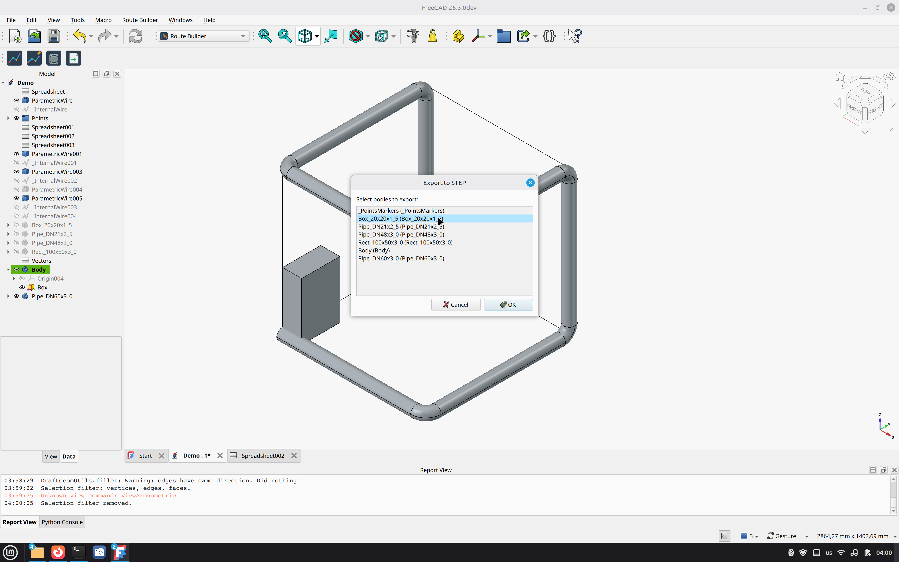

Introduction
Введение
Route Builder is a FreeCAD workbench for building parametric 3D routes (pipes, cables, ducts) with automatic generation of solid bodies.
It is designed for engineers who need to create orthogonal routing systems quickly and precisely. The route is defined by coordinates in a Spreadsheet, and the body (pipe, box, or rectangle) is generated automatically along the trajectory.
Route Builder — это верстак FreeCAD для построения параметрических 3D-трасс (трубопроводы, кабельные лотки, воздуховоды) с автоматической генерацией тел.
Инструмент создан для инженеров, которым нужно быстро и точно проектировать ортогональные трассы. Трасса задаётся координатами в таблице Spreadsheet, а тело (труба, короб или прямоугольник) генерируется автоматически вдоль траектории.
Installation
Установка
Clone this repository into your FreeCAD Mod directory:
Linux:
cd ~/.local/share/FreeCAD/Mod/
git clone https://github.com/vibecader/FreeCAD-RouteBuilder.gitWindows:
cd %APPDATA%/FreeCAD/Mod/
git clone https://github.com/vibecader/FreeCAD-RouteBuilder.gitmacOS:
cd ~/Library/Application\ Support/FreeCAD/Mod/
git clone https://github.com/vibecader/FreeCAD-RouteBuilder.gitRestart FreeCAD. Switch to the Route Builder workbench.
Склонируйте репозиторий в папку Mod FreeCAD:
Linux:
cd ~/.local/share/FreeCAD/Mod/
git clone https://github.com/vibecader/FreeCAD-RouteBuilder.gitWindows:
cd %APPDATA%/FreeCAD/Mod/
git clone https://github.com/vibecader/FreeCAD-RouteBuilder.gitmacOS:
cd ~/Library/Application\ Support/FreeCAD/Mod/
git clone https://github.com/vibecader/FreeCAD-RouteBuilder.gitПерезапустите FreeCAD. Выберите верстак Route Builder.
Quick Start
Быстрый старт
- Create a Spreadsheet and fill columns A, B, C with X, Y, Z coordinates.
- Switch to the Route Builder workbench.
- Click Create Route → select the spreadsheet.
- In the Builder tab, choose axis and length, then click Add Segment (or press
Ctrl+Enter). - Switch to the Vectors tab to edit segment lengths if needed.
- Click Create Body by Trajectory and select the profile.
- Export the result with Export to STEP.
- Создайте Spreadsheet и заполните колонки A, B, C координатами X, Y, Z.
- Переключитесь на верстак Route Builder.
- Нажмите Create Route → выберите таблицу.
- На вкладке Builder выберите ось и длину, нажмите Add Segment (или
Ctrl+Enter). - На вкладке Vectors при необходимости отредактируйте длины сегментов.
- Нажмите Create Body by Trajectory и выберите профиль.
- Экспортируйте результат через Export to STEP.
Builder tab
Вкладка Builder
The Builder tab is used to add orthogonal segments to the route. Choose an axis (+X, -X, +Y, -Y, +Z, -Z) and a length, then click Add Segment.
A color-coded phantom shows the projected segment: red for X, green for Y, blue for Z.

Ctrl+1..6 to quickly switch axes. Press Ctrl+Enter to add a segment without clicking the button.
Вкладка Builder предназначена для добавления ортогональных сегментов. Выберите ось (+X, -X, +Y, -Y, +Z, -Z) и длину, затем нажмите Add Segment.
Цветной фантом показывает проектируемый сегмент: красный — X, зелёный — Y, синий — Z.
Ctrl+1..6 для быстрого выбора оси. Нажмите Ctrl+Enter, чтобы добавить сегмент без кнопки.
Points tab
Вкладка Points
The Points tab shows all trajectory points with their X, Y, Z coordinates. Double-click a row to highlight the point in the 3D view.

Buttons:
- Refresh — reload the table.
- Copy All — copy coordinates to clipboard (TSV).
- Export CSV — save coordinates to a CSV file.
- Delete Last — remove the last segment.
Вкладка Points показывает все точки траектории с координатами X, Y, Z. Двойной клик по строке подсвечивает точку в 3D-виде.
Кнопки:
- Refresh — обновить таблицу.
- Copy All — копировать координаты в буфер (TSV).
- Export CSV — сохранить координаты в CSV.
- Delete Last — удалить последний сегмент.
Vectors tab
Вкладка Vectors
The Vectors tab shows the route as a list of segments: direction (DIR) and length (LEN).
Double-click on a LEN cell to edit the segment length. The coordinates of all subsequent points recalculate automatically.

Вкладка Vectors показывает трассу в виде списка сегментов: направление (DIR) и длина (LEN).
Двойной клик по ячейке LEN — редактирование длины сегмента. Координаты всех последующих точек пересчитываются автоматически.
Attachment tab
Вкладка Attachment
The Attachment tab allows you to attach the route to an existing geometry: vertex, edge, or face.
- Select a vertex, edge, or face in 3D.
- Click Change Attachment.
The route start will be moved to the selected point. A green marker shows the current attachment.


Вкладка Attachment позволяет привязать трассу к существующей геометрии: вершине, ребру или грани.
- Выделите вершину, ребро или грань в 3D.
- Нажмите Change Attachment.
Начало трассы переместится в выбранную точку. Зелёный маркер показывает текущую привязку.
Create Body by Trajectory
Создание тела по траектории
Click Create Body by Trajectory to generate a solid body along the route. Choose a profile type:
- Circle (pipe) — standard DN diameters from DN15 to DN500, with wall thickness.
- Square — side from 20 to 100 mm, with wall thickness.
- Rectangle — standard sizes from 40x20 to 180x100 mm, with wall thickness.
- Custom size — any value.

The body is generated automatically with the chosen profile and updates when the route changes.

Fillet Radius in the route's properties — the body will follow rounded corners.
Нажмите Create Body by Trajectory, чтобы создать тело вдоль трассы. Выберите тип профиля:
- Circle (pipe) — стандартные DN от DN15 до DN500 с толщиной стенки.
- Square — сторона от 20 до 100 мм с толщиной стенки.
- Rectangle — стандартные размеры от 40x20 до 180x100 мм с толщиной стенки.
- Custom size — любое значение.
Тело генерируется автоматически по выбранному профилю и обновляется при изменении трассы.
Fillet Radius в свойствах — тело получит скруглённые углы.
STEP Export
Экспорт в STEP
Click Export to STEP to export bodies to a STEP file. If the document contains multiple bodies, a selection dialog appears.

Нажмите Export to STEP, чтобы экспортировать тела в файл STEP. Если в документе несколько тел, появится диалог выбора.
Hotkeys
Горячие клавиши
| Keys | Action | Клавиши | Действие |
|---|---|---|---|
Ctrl+Enter |
Add segment | Добавить сегмент | |
Ctrl+Z |
Remove last segment | Удалить последний сегмент | |
Ctrl+1 |
Select axis +X | Выбрать ось +X | |
Ctrl+2 |
Select axis -X | Выбрать ось -X | |
Ctrl+3 |
Select axis +Y | Выбрать ось +Y | |
Ctrl+4 |
Select axis -Y | Выбрать ось -Y | |
Ctrl+5 |
Select axis +Z | Выбрать ось +Z | |
Ctrl+6 |
Select axis -Z | Выбрать ось -Z |
Tips & Troubleshooting
Советы и решения
Tips
- Use Fillet Radius in route properties to smooth corners.
- Use the Show Points button to visualize trajectory points with numbers.
- Enable selection filters (Vertex/Edge/Face) to avoid mistakes when attaching.
- Use Export CSV to save coordinates for use in Excel.
- The body updates automatically when the route changes — no need to recreate it.
Troubleshooting
- Segment not added — the point already exists or overlaps an existing segment. Check the Vectors table.
- Attachment lost — the referenced object was deleted. Reset the attachment and reattach.
- Markers not visible — zoom out or reset the view (
View → Fit All). - Body not updating — press
Ctrl+R(Recompute).
Советы
- Используйте Fillet Radius в свойствах трассы, чтобы скруглить углы.
- Кнопка Show Points показывает точки траектории с номерами.
- Включите фильтры выбора (Vertex/Edge/Face) при привязке.
- Используйте Export CSV для сохранения координат в Excel.
- Тело обновляется автоматически при изменении трассы — не нужно создавать заново.
Решения проблем
- Сегмент не добавляется — точка уже существует или накладывается на существующий сегмент. Проверьте таблицу Vectors.
- Привязка потеряна — объект, к которому была привязка, удалён. Сбросьте привязку и привяжите заново.
- Маркеры не видны — уменьшите масштаб или сбросьте вид (
Вид → Показать всё). - Тело не обновляется — нажмите
Ctrl+R(Пересчитать).
License
Лицензия
- Code: LGPL-2.1-or-later
- Assets (icons): CC-BY-SA-4.0
Author: VibeCADer — GitHub
- Код: LGPL-2.1-or-later
- Ресурсы (иконки): CC-BY-SA-4.0
Автор: VibeCADer — GitHub